This study produces a photographic record of all Thargoid surface structures and an analysis of the structures above the surface. The analysis is used to form the basis of a new way of classifying the sites to facilitate further study of the surface sites.
In 2020 commander EmulatedPenguin did another survey which corrected some data. The results can be seen here.
CMDR LCU No Fool Like One
Senior Fellow Miskatonic University / Councillor Canonn Interstellar Research
Contributors: ByteSturm, JohnTAss, ElectricNacho, DrunkEng1n33r, Shoja Kamalu, Armourer, Delmonte, G_Bison, Henoch, MadDavo, Wanakamura, Cordon Bleu, Crunch Buttsteak, Mazaious, Petrenus, Regemus, Teronis1746, Alkibiades, Bacon_, Capitan Radz, ClusterNuke63, Crimshadow2, Denholm, Dogsbreath, Hrdina, I C Aleinns, JeronimusII, JohntAss, Kace Mono, Leadr0fthepack, LordTyvin, Lybra, Maylor Rom, Minogon, Misterbowwow, OverloadRJ45, Powell Oblivion, Ranx, Squeesquee, Tokfrans, Vallysa, Xeno, Maligno
In December 3304 The Miskatonic University in collaboration with the Canonn Interstellar Research Group embarked on an expedition to visit all known Thargoid Surface Sites across the galaxy. The bulk of the work carried out by Miskatonic University students and the rest carried out by Canonn members responding to patrol requests.
The primary objective of the expedition was to capture high quality aerial photography of the surface sites to act as a baseline for comparison between sites and as a reference to allow ongoing monitoring of the sites for changes.
Analysis of the images allows a finer grained analysis of the condition of the sites beyond active and inactive states.
Students were asked to visit each of the sites in turn and fill in a survey form. The Canonn patrol system was also updated to request a survey from local Canonn commanders using our EDMC-Plugin. This asked a number of questions regarding the number of leviathans and the status of the site. They were also encouraged to take an aerial photograph of the site using the following procedure.
After collating all the data the sites were ordered by number of Leviathans and using the photographs we were able to quickly confirm whether the correct numbers were being recorded.
Thargoid sites all exhibit the same basic structure. A central structure housing the Thargoid device surrounded by eight petal-like depressions which can contain up to six structures commonly known as Leviathans and other elements that look like bones. On the inner and outer edges of the depressions are spiked structures which have been given the unofficial name Thargomisers.
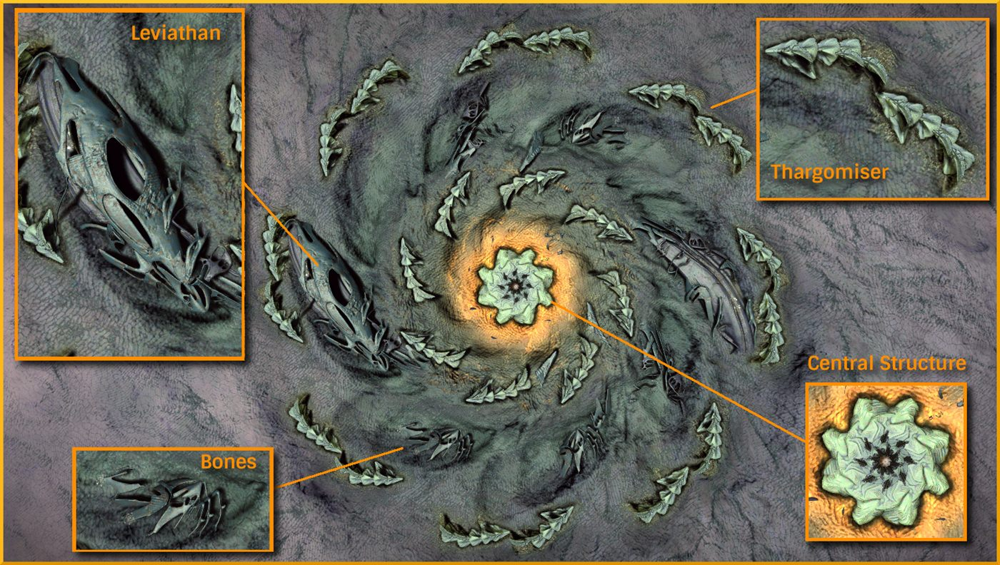
The study began by classifying each site broadly by the number of Leviathans. The number reported by commanders was cross checked again with the images provided.
Once the sites had their leviathan counts tallied, the aerial photographs were inspected to break them down into subtypes based on the type and distribution of leviathans. With this analysis we were able to identify that there was a direct correlation between the number of leviathan's and the ability to access the device. All sites with less than 3 Leviathans were inactive. Ie. The central chamber was inaccessible.
We will refer to sites as Type 0 though to Type 6 with the number representing the number of Leviathans.
In order to assist with classification each leviathan type was given a name with an initial that could be used in notation to enable rapid comparison. The names were chosen to be memorable rather than for scientific rigour so as to make it easier to identify them. We could then construct a code to categorise them using the initials.
When discussing features we will use the convention proposed by Cmdr Cosine in his study Leviathan Notes 1 and describe locations on the leviathans as Front, Back, Outer and Inner. Front being anti-clockwise, back clockwise, inner, closest to the centre and outer furthest from the centre.
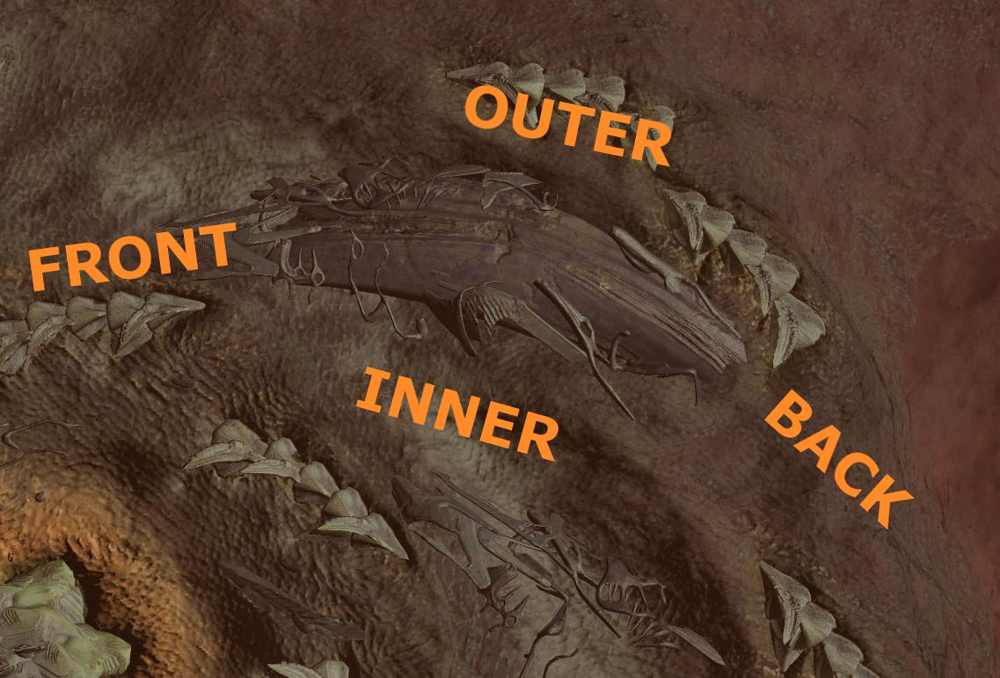
Bearing a superficial resemblance to a blue whale from above, this is a relatively uncommon type of small leviathan. The whale is a solid mass with stepped sides giving it the striated appearance. It is often surrounded by the same bone-like structures found on sites with no Leviathans.
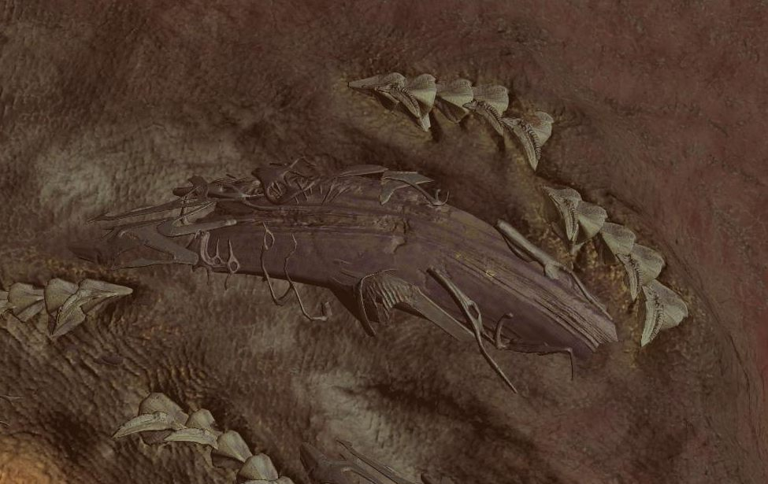
Though there is very little resemblance to a tuna fish the name has struck. This Leviathan has a smooth outer shell with several large voids that can be entered. Inside the shell is actually a Whale type leviathan.
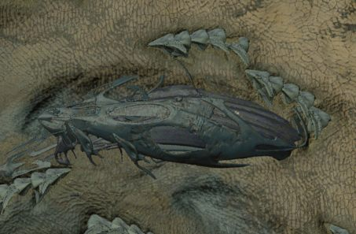
So called because of a resemblance to the terrestrial insect of the same name, characterised by an exposed winglike structure. This appears to be a less complete example of the next two Leviathan types. The front of this Leviathan is slightly elevated by a stirrup like structure.
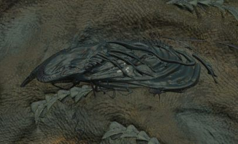
The flying ant is easily confused with the lacewing. The two can be distinguished because of an additional structure covering the outer back part of the winglike structure. This structure appears to be present in the next class of leviathan but with other encasing structures surrounding it. Like the lacewing the front is elevated by the same stirrup-like structure.
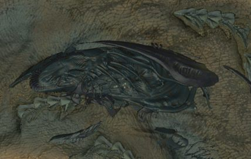
The roach is the largest class of Leviathan and appears to be a more complete version of the lacewing and flying ant structures. The back of the roach has a well developed shell. The front of the Roach is elevated higher than the lacewing and the flying ant, with the stirrup fully extracted from the ground. On the outer side of the Roach there is another bone structure that is supporting it.
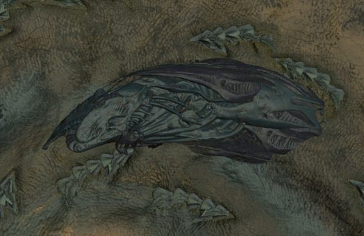
As noted previously the Leviathans are found inside the petal like depressions. We used a code that represented which leviathans were in which slots. The initial letter of the leviathan type for an occupied slot and "+" to represent an empty slot.
Given that the petals are in a circle we started with the largest group and worked clockwise, if there wasn't a largest group we would pick the first Leviathan clockwise of the largest group of spaces.
Thus a 3A site could be represented as T+R+R with the trailing spaces omitted. A 6A site could be represented as RTLR+RF.
This meant that we could compare sites without having to look at the photographs once they had already been classified.
Type 0 sites do not have any leviathans at all but have what look like bones in the depressions where the leviathans would go. The bones appear to be present on many of the Leviathans and as such may not be bones as such but more like superstructure or perhaps scaffolding.
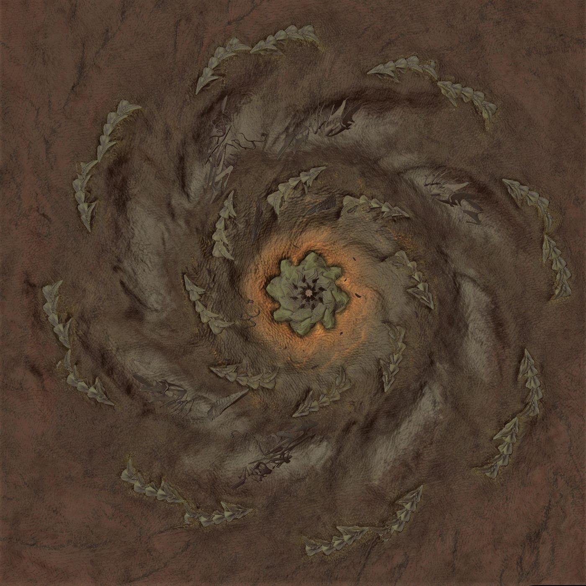
We do not know at this stage whether the bones are the last part of the structure to decompose following damage from mycoid of if they are the first stage in the construction of a Leviathan.
These sites are inactive as it is not possible to pass through the doors of the central structure.
The Type 0 sites have a number of Thargoid Uplink Devices attached to various structures around the site and a relatively high volume of barnacle barbs and scavengers compared to other sites.
Pods which are found inside active sites can be found outside type 0 sites around the doors.
| Subtype | Pattern | Count |
|---|---|---|
| A | ++++++++ | 25 |
Type one sites come in two variants either containing a Whale or a Tuna style Leviathan no other types of Leviathan can be found on this site. Like the Type 0 site there are a number of Thargoid Uplink Devices as well as barnacle barbs and pods.
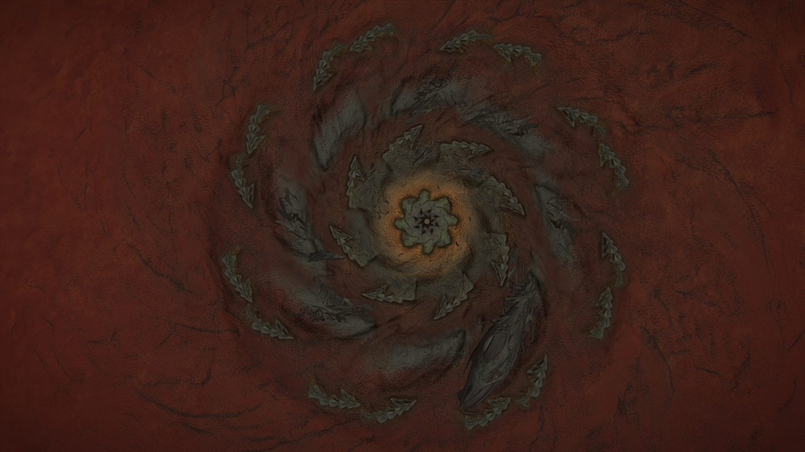
| Subtype | Pattern | Count |
|---|---|---|
| A | W | 13 |
| B | T | 8 |
This always contains a Whale and a Tuna, this suggests that type 2 sites are related to Type 1. Once again we are unable to determine if the type 2 degrades to become a Type one or if a Type 1 grows to become a Type 2.
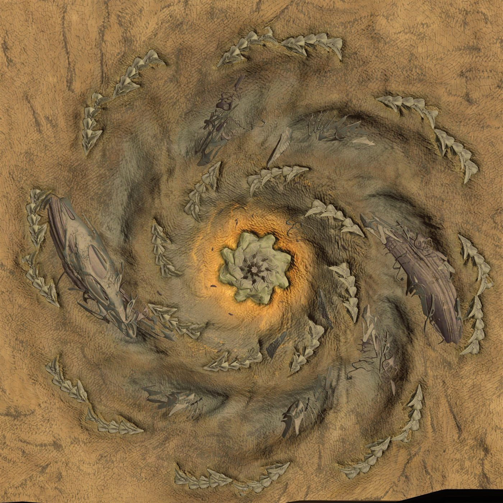
Type 2 sites are inactive and in common with other inactive sites have Thargoid uplink devices at various locations outside.
| Subtype | Pattern | Count |
|---|---|---|
| A | W+++T | 23 |
The type 3 contains 3 Leviathans in a variety of combinations. Overall there are 10 different subtypes 8 of which are unique. There are no type 3 sites with a tuna and whale in the same position as a type 2 site. This suggests there is no relationship between the two types of site.
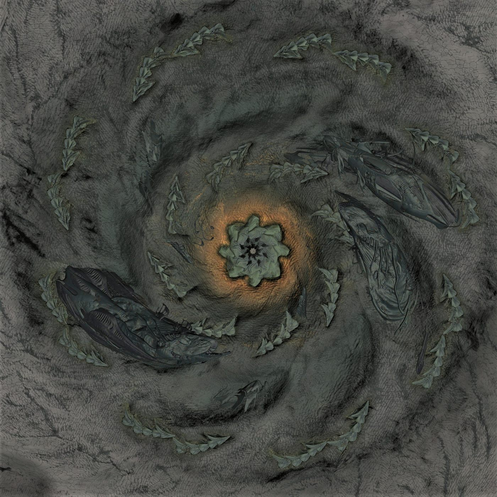
| Subtype | Pattern | Count |
|---|---|---|
| A | T+R+R | 2 |
| B | LR++++R | 3 |
| C | T+R++F | 3 |
| D | TL++R | 1 |
| E | RT+++R | 1 |
| F | RTL | 1 |
| G | RT++++F | 1 |
| H | L+R+L | 1 |
| I | RL+++R | 1 |
| J | L+R++L | 1 |
This is the most populous of all the site types with 111 sites of this type. There are a variety of subtypes but the most populous contains a Whale, Ant, Empty, Empty, Tuna, Empty, Lacewing (WF++T+L). Given that the Whale and Tuna are in the same positions as the Type 2 sites there is a possibility that the type 4A sites are related to the type 2 sites.
The type 4 site is the most widely distributed across the merope bubble.
If you exclude type 4 from a 3D map then you can see more distinctive zones between site types and between active and inactive sites.
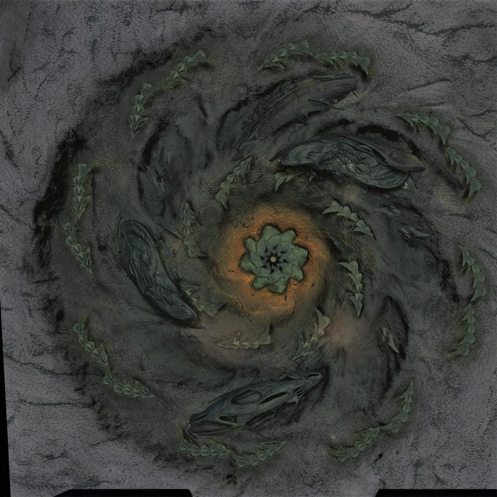
| Subtype | Pattern | Count |
|---|---|---|
| A | WA++T+L | 86 |
| B | RT+R+R | 3 |
| C | LR+RL | 3 |
| D | RL+R++R | 2 |
| E | RTL++R | 1 |
| F | RTLR | 2 |
| G | RTL+++L | 2 |
| H | RT+R++L | 1 |
| I | RL+R+L | 1 |
| J | LR++L+R | 1 |
| K | RL++T+R | 1 |
| L | LR+R++R | 2 |
| M | RL++TL | 1 |
| N | RL+L++R | 1 |
| O | TLR++L | 1 |
| P | RT+R++L | 1 |
| Q | RT+R+R | 1 |
| R | TLR+R | 1 |
The type 5 has 4 subtypes but the most populous is the 5A which has the pattern RTLR+R. None of the sites contain a whale so there is likely no relationship to the type 2.
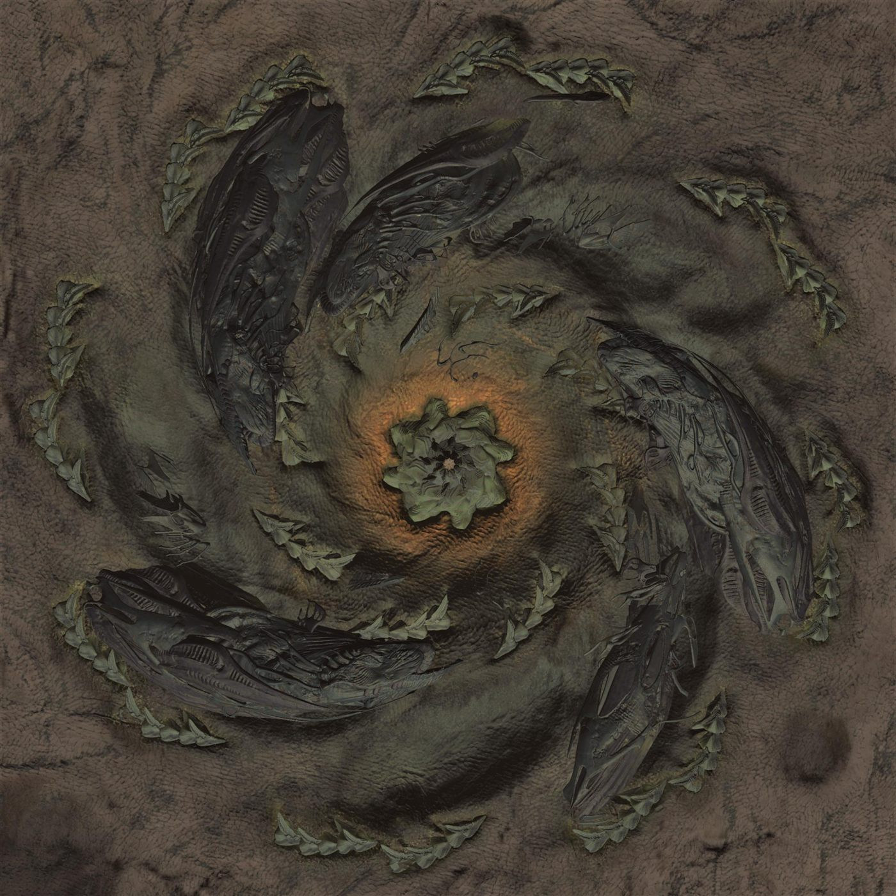
| Subtype | Pattern | Count |
|---|---|---|
| A | RTLR+R | 10 |
| B | RTL++RF | 5 |
| C | RT+R+RF | 5 |
| D | TLR+RF | 2 |
The type six site only has one variety of site with the pattern RTLR+RA.
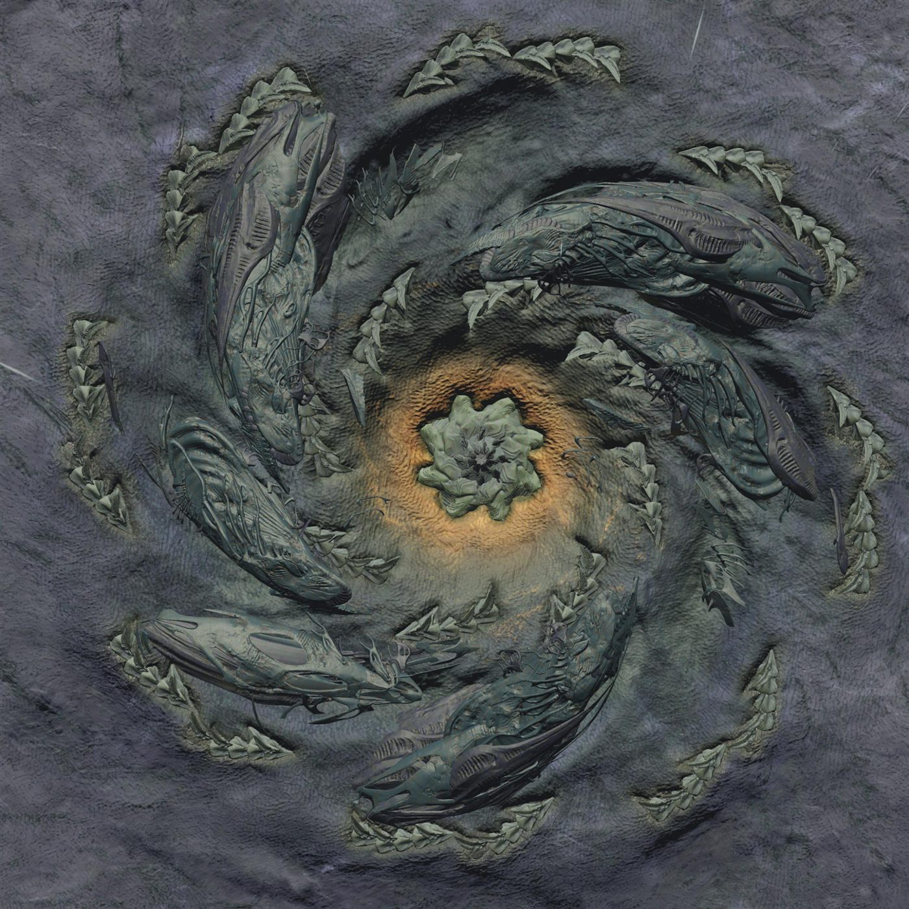
| Subtype | Pattern | Count |
|---|---|---|
| A | RTLR+RA | 10 |
See the external data sheet: Thargoid Surface Site Survey (Results)
While this study is intended to facilitate further research there are some conclusions that can be inferred from the data analysed so far.
While it is too early to draw too many conclusions there are a number of questions that could be asked.
It would be useful to undertake a study to catalogue the component parts of the Leviathans. The purpose of this study would be to compare the structure of related leviathan types to identify common parts and to determine whether we are seeing different stages of development or different stages of degradation.